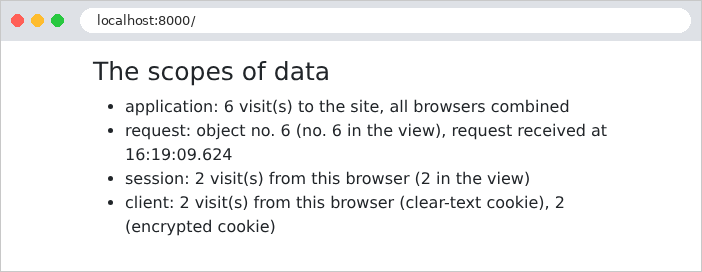

6. Ámbitos de los datos
Una aplicación web atiende a muchos usuarios a la vez, y cada usuario realiza numerosas solicitudes. Por lo tanto, los datos pueden compartirse en varios niveles, conocidos como su ámbito:
- aplicación: los datos son compartidos por todos los usuarios durante toda la vida de la aplicación (por ejemplo, la lista de médicos);
- solicitud: los datos existen solo mientras dura una solicitud (el modelo de una vista, el usuario conectado tal como se identifica en esa solicitud);
- sesión: los datos son específicos de un usuario y deben persistir de una solicitud a la siguiente (el idioma seleccionado, un carrito de compras);
- cliente: datos almacenados en el propio navegador, en una cookie.
En [PHP], estos ámbitos se comportan de una manera particular porque la aplicación se reconstruye con cada solicitud (ejemplo 01): nada sobrevive en memoria de una solicitud a la siguiente. Por lo tanto, todo dato que deba durar más que una sola solicitud se almacena fuera de [PHP]: en el caché, en una base de datos, en archivos o del lado del cliente. Esta es la llamada arquitectura «shared-nothing» (sin nada compartido): cada solicitud es procesada de forma aislada por un proceso que no comparte nada con los que procesan otras solicitudes. Este enfoque tiene ventajas importantes: un error afecta solo a una solicitud, ningún dato se filtra de un usuario a otro y se pueden ejecutar varios servidores idénticos detrás de un balanceador de carga, siempre que compartan el mismo caché y la misma base de datos.
En [Laravel], cada ámbito tiene su propio contenedor:
Ámbito | Contenedor | Duración |
aplicación | el caché ([Cache] fachada, ejemplo 20) o la base de datos | la duración seleccionada, o ilimitada |
solicitud | los objetos del contenedor (un singleton existe solo para una solicitud), los atributos de la solicitud (ejemplo 12) | el procesamiento de una solicitud |
sesión | la sesión ([$request->session()], [session()]), almacenada por el servidor y recuperada mediante una cookie | Período de inactividad predeterminado de 2 horas ([SESSION_LIFETIME]) |
cliente | una cookie ([withCookie], ejemplo 22), cifrada de forma predeterminada | la duración especificada de la cookie |
La sesión de [Laravel] es una sesión mantenida por el servidor, como las de [Java] ([JSESSIONID]) o la clásica de [PHP] ([PHPSESSID]): sus datos se almacenan en el servidor (un archivo por sesión, con la configuración de nuestros ejemplos) y el navegador solo conserva el identificador en una cookie cifrada (ejemplo 20). Esto difiere de [Flask], cuya sesión completa se almacena en una cookie firmada del lado del cliente.
6.1. Ejemplo 23: ámbitos
6.1.1. Los objetos: app/Services/CounterService.php y RequestInfo.php
- Líneas 13–20: un contador de ámbito de aplicación: un número almacenado en el caché bajo una clave e incrementado en 1 en cada llamada. El caché ofrece un método [Cache::increment], pero con el almacén «file» que se usa en nuestros ejemplos no es atómico: lee el valor, lo incrementa y luego lo escribe, y dos solicitudes simultáneas podrían leer el mismo valor, lo que causaría una visita perdida. Por ello, un bloqueo (ejemplo 20) protege tanto la lectura como la escritura. (Con un almacén como [Redis] o una base de datos, [Cache::increment] es atómico y el bloqueo es innecesario.) La función devuelve el valor del bloqueo, que es el mismo que el de la función que protege;
- líneas 22–25: el contador de visitas.
- líneas 8–10: propiedades declaradas como [readonly] una por una (en lugar de toda la clase): solo pueden asignarse una vez, mediante el constructor;
- líneas 12–18: información de ámbito de solicitud: un número, derivado de un contador compartido por todas las solicitudes (el contador de la clase anterior, con otra clave), y la hora de la solicitud. La función [now()] devuelve la hora actual como una fecha [Carbon]; el formato [v] especifica los milisegundos.
6.1.2. Configuración: bootstrap/app.php
- Línea 18: la cookie [myVisits] no está cifrada; todas las demás sí lo están (ejemplo 22);
- Líneas 22–23: ambos servicios se registran en el contenedor. [withSingletons] (ejemplo 06): un único objeto, creado en la primera solicitud. [withScopedSingletons]: un único objeto por solicitud. En un entorno [PHP] estándar, ambos son equivalentes, ya que cada solicitud reconstruye la aplicación y su contenedor. La diferencia se hace evidente con [Laravel Octane], un servidor de aplicaciones que mantiene la aplicación en memoria de una solicitud a la siguiente para mejorar el rendimiento: un singleton es compartido por todas las solicitudes, mientras que un singleton «con ámbito» se vuelve a crear para cada una. Declarar el ámbito deseado garantiza que el código sea correcto en ambos casos.
6.1.3. El controlador: app/Http/Controllers/ScopesController.php
- línea 14: la acción recibe la solicitud y los dos servicios, proporcionados por el contenedor;
- línea 17: el ámbito de aplicación;
- línea 20: el ámbito de sesión. [$request->session()] devuelve la sesión del usuario; su método [increment] incrementa en 1 el valor de una clave (o lo establece en 0 si no existe) y devuelve el nuevo valor. Un valor se lee con [get('visits')] y se escribe con [put('visits', 3)]; la función [session('visits')] es un atajo para la lectura. [Laravel] guarda la sesión al final de la solicitud (el middleware [StartSession] del grupo [web]);
- líneas 23–24: el ámbito de cliente, con dos cookies. Sus valores son cadenas proporcionadas por el navegador y, por lo tanto, pueden faltar o ser inválidos: la conversión [(int)] devuelve 0 para [null] o para un texto que no es un número;
- Líneas 25–30: para establecer una cookie se necesita el objeto de respuesta: [response()->view(...)] lo construye a partir de la vista (ejemplo 13) y luego [withCookie] le agrega las cookies. Sin un tiempo de expiración, una cookie dura hasta que se cierra el navegador (es una cookie «de sesión», según la definición de los navegadores).
6.1.4. La vista: resources/views/scopes/scopes.blade.php
- Línea 13: la directiva [@inject] solicita un objeto al contenedor, desde la propia vista, y lo almacena en una variable (aquí, [$info]). Durante la misma solicitud, es el mismo objeto [RequestInfo] que el de la acción: la vista muestra su número, que debe ser el recibido de la acción;
- Línea 18: la sesión también es accesible en las vistas.
6.1.5. Ejecución
Después de algunas visitas en un navegador:

Sigamos las solicitudes con [curl], que actúa como un primer navegador al almacenar sus cookies en el archivo [a.txt]:
La respuesta establece cuatro cookies. La primera, [myVisits], contiene el valor en texto plano. La segunda, [myEncryptedVisits], contiene el mismo valor, cifrado: la parte visible es una cadena codificada en Base64 (JSON), que contiene el vector de inicialización del cifrado ([iv]), el valor cifrado ([value]) y un código de autenticación ([mac]), que garantiza que el valor no ha sido alterado. Las dos últimas corresponden a la sesión y a la protección anti-CSRF (ejemplo 20). Una segunda visita, con las mismas cookies:
Un segundo «navegador», con su propio archivo de cookies, que inicialmente está vacío:
El contador de la aplicación siguió avanzando; la sesión y las cookies del segundo navegador comienzan de nuevo en 1. Cada solicitud tuvo su propio objeto [RequestInfo], y en cada una la acción y la vista fueron las mismas. Por último, un usuario malicioso falsifica sus propias cookies: 1000 visitas en [myVisits], 999 en [myEncryptedVisits] y un identificador de sesión de su propia invención:
La cookie sin cifrar fue aceptada tal cual: 1001 visitas. La cookie [myEncryptedVisits], en cambio, no pudo descifrarse: [Laravel] la ignoró, como si estuviera ausente. Lo mismo ocurre con la cookie de sesión: el usuario no puede elegir la sesión de otro usuario y se le asigna una nueva. Esta es la diferencia clave entre una cookie normal y una cookie cifrada. Recordemos la regla: los datos provenientes del cliente son confiables solo si están protegidos por el servidor (cifrados, como aquí, o firmados, como el token del capítulo sobre autenticación); los datos que no tienen nada que ocultar y cuyo valor es verificado por el servidor (el idioma en el ejemplo 22) pueden permanecer en texto plano.